산업안전산업기사 (2011-08-21 기출문제)
1과목: 산업안전관리론
1. 다음 중 사회행동의 기본 형태를 올바르게 연결한 것은?
- 불안 - 고립, 조력
- 대립 - 공격, 경쟁
- 도피 - 자살, 타협
- 협력 - 고립, 모방
(정답률: 83%)

2. 다음 중 주의(attention)에 관한 설명으로 옳은 것은?
- 주의는 장시간에 걸쳐 집중이 가능하다.
- 주의가 집중이 되면 주의의 영역은 넓어진다.
- 주의는 동시에 2개 이상의 방향에 집중이 가능하다.
- 주의의 방향과 시선의 방향이 일치할수록 주의의 정도가 높다.
(정답률: 84%)
3. 다음 중 탱크 내부에서의 세정업무 및 도장업무와 같이 산소결핍이 우려되는 장소에서 반드시 사용하여야 하는 보호구로 옳은 것은?
- 위생마스크
- 송기마스크
- 방진마스크
- 방독마스크
(정답률: 81%)
4. 하인리히(Heinrich)가 제시한 사고연쇄반응이론의 각 단계가 다음과 같을 때 올바른 순서대로 나열한 것은?
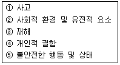
- ② → ④ → ⑤ → ① → ③
- ④ → ② → ⑤ → ① → ③
- ④ → ② → ⑤ → ③ → ①
- ② → ⑤ → ④ → ③ → ①
(정답률: 70%)
5. 리더십에 있어서 권한의 역할 중 조직이 지도자에게 부여한 권한으로 볼 수 없는 것은?
- 전문성의 권한
- 보상적 권한
- 강압적 권한
- 합법적 권한
(정답률: 75%)
6. 다음 중 하버드 학파의 5단계 교수법에 해당되지 않는 것은?
- 교시(Presentation)
- 연합(Association)
- 추론(Reasoning)
- 총괄(Generalization)
(정답률: 81%)
7. 다음 중 위험예지훈련 기초 4라운드(4R)에 관한 내용으로 옳은 것은?
- 1R : 목표설정
- 2R : 현상파악
- 3R : 대책수립
- 4R : 본질추구
(정답률: 86%)
8. 다음 중 데이비스(K. Davis)의 동기부여이론에서 관련 등식으로 옳은 것은?
- 상황 × 태도 = 동기유발
- 지식 × 기능 = 인간의 성과
- 능력 × 동기유발 = 물질적 성과
- 지식 × 동기유발 = 경영의 성과
(정답률: 66%)
9. 다음 중 인지(認知) 과정에서 생길 수 있는 착오의 원인으로 볼 수 없는 것은?
- 심리적 능력한계
- 감각차단 현상
- 자기기술 과신
- 정보량의 저장한계
(정답률: 60%)
10. 산업안전보건법상 안전·보건표지 중 경고표지에 해당하는 것은?
- 금연
- 화기 경고
- 차량통행 경고
- 몸균형상실 경고
(정답률: 57%)
11. 다음 중 산업안전보건법상 사업내 안전보건·교육에 있어 관리감독자 정기안전·보건교육의 내용이 아닌 것은? (단, 기타 산업안전보건법 및 일반관리에 관한 사항은 제외한다.)
- 물질안전보건자료에 관한 사항
- 산업보건 및 직업병 예방에 관한 사항
- 표준안전작업방법 및 지도 요령에 관한 사항
- 작업공정의 유해·위험과 재해 예방대책에 관한 사항
(정답률: 57%)
12. 다음 중 표준작업방법으로의 작업, 안전수칙 및 규칙의 준수 등 가치관을 형성하는 교육의 종류는?
- 태도교육
- 기능교육
- 지식교육
- 훈련교육
(정답률: 74%)
13. 앞에 실시한 학습의 효과는 뒤에 실시하는 새로운 학습에 직접 또는 간적으로 영향을 주는데, 이러한 현상을 무엇이라 하는가?
- 통찰(Insight)
- 전이(Transfer)
- 반사(Reflex)
- 반응(Reaction)
(정답률: 87%)
14. 다음 중 산업재해 통계에 관한 설명으로 적절하지 않은 것은?
- 산업재해 통계는 구체적으로 표시되어야 한다.
- 산업재해 통계의 목적은 기업에서 발생한 산업재해에 대하여 효과적인 대책을 강구하기 위함이다.
- 산업재해 통계는 안전 활동을 추진하기 위한 기초 자료이다.
- 산업재해 통계를 기반으로 안전 조건이나 상태를 추측할 수 있다.
(정답률: 62%)
15. 다음 중 재해조사에 있어 재해의 발생 형태에 해당하지 않는 것은?
- 중독·질식
- 낙하·비례
- 전도·전복
- 이상온도에의 노출
(정답률: 47%)
16. 어떤 화학공장에서 450명의 근로자가 1년 동안 작업하는 가운데 21건의 재해가 발생하여 250일의 근로 손실이 발생하였다. 이 공장의 도수율은 약 얼마인가? (단, 근로자는 1일 9시간 연간 280일을 근무하였다.)
- 0.22
- 18.52
- 22.⑤
- 46.67
(정답률: 69%)
17. 산업안전보건법상 자율안전확인대상 기계·기구의 방호 장치에 속하는 것은?
- 압력용기 압력방출용 파열판
- 보일러 압력방출용 안전밸브
- 방폭구조(防爆構造) 전기기계·기구 및 부품
- 교류 아크용접기용 자동전격방지기
(정답률: 72%)
18. 다음 중 재해예방의 4원칙에 해당되지 않는 것은?
- 예방가능의 원칙
- 원인계기(연계)의 원칙
- 대책선정의 원칙
- 현장보존의 원칙
(정답률: 87%)
19. 다음 중 안전교육방법에 있어 강의법에 관한 설명으로 틀린 것은?
- 시간에 대한 조정이 용이하다.
- 전체적인 교육내용을 제시하는데 유리하다.
- 종류에는 포럼, 심포지엄, 버즈세션 등이 있다.
- 다수의 인원에게 동시에 많은 지식과 정보의 전달이 가능하다.
(정답률: 66%)
20. 산업안전보건법에 따라 고용노동부장관이 산업재해 예방활동에 대한 참여와 지원을 촉진하기 위하여 근로자, 근로자 단체, 사업주단체 및 산업재해 예방 관련 전문단체에 소속된 자 중에서 위촉할 수 있는 사람을 무엇이라 하는가?
- 사업재해조사관
- 관리감독자
- 명예산업안전감독관
- 근로감독관
(정답률: 65%)
2과목: 인간공학 및 시스템안전공학
21. 다음 중 광원으로부터의 직사 휘광에 대한 대책으로 적절하지 않은 것은?
- 광원의 수는 늘리고 휘도는 줄인다.
- 광원을 시선에서 멀리 위치시킨다.
- 휘광원 주위를 어둡게 한다.
- 가리개, 갓, 차양 등을 사용한다.
(정답률: 71%)
22. FT도에 사용되는 다음 기호의 명칭으로 옳은 것은?
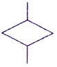
- 통상사상
- 수정기호
- 제어게이트
- 생략사상
(정답률: 74%)
23. 주물공장 A 작업자의 작업지속시관과 휴식시간을 열압박지수(HSI)를 활용하여 계산하니 각각 45분, 15분이었다. A 작업자의 1일 작업량은 얼마인가? (단, 휴식시간은 포함하지 않는다.)
- 4.5시간
- 5시간
- 5.5시간
- 6시간
(정답률: 60%)
24. 다음 중 시스템을 설계함에 있어 개념형성 단계에서 최초로 시도하는 위험도 분석은?
- PHA
- FHA
- SHA
- OHA
(정답률: 75%)
25. 고장률이 0.0001이고, 4개의 저항은 독립적이며, 병렬 구조로 연결되어 있을 때 1000시간이 지잔 후의 신뢰도는 약 얼마인가?
- 86.59%
- 89.99%
- 96.59%
- 99.99%
(정답률: 59%)
26. 다음 중 불연속 통제장치에 해당되는 것은?
- 핸들
- 크랭크
- 페달
- 로터리 스위치
(정답률: 68%)
27. 다음 중 고장형태 및 영향분석의 표준적인 실시 절차에 해당되지 않는 것은?
- 대상시스템의 분석
- 고장형태와 영향의 해석
- 톱사상과 기본사상의 결정
- 치명도 분석과 개선책 검토
(정답률: 58%)
28. 다음 FT도에서 정상사상 A 의 발생확률은 얼마인가? (단, 사상 B1 의 발생확률은 0.3 이고, B2 의 발생 확률은 0.2이다.)
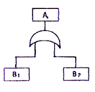
- 0.06
- 0.44
- 0.56
- 0.94
(정답률: 67%)
29. 다음 중 인간이 기계를 능가하는 기능이라 할 수 있는 것은?
- 귀납적 추리
- 지속적인 단순 반복작업
- 다양한 활동의 복합적 수행
- 암호화(coded)된 정보의 신속한 보관
(정답률: 76%)
30. 다음 중 인체계측치의 하위 백분위수(percentile)를 기준으로 하는 최소 집단치의 사용 예로 가장 적절한 것은?
- 선반의 높이
- 의자의 높이
- 문의 높이
- 통로의 폭
(정답률: 63%)
31. 다음 중 인간-기계 체계에서 인간실수가 발생하는 원인으로 적절하지 않은 것은?
- 학습착오
- 처리착오
- 출력착오
- 입력착오
(정답률: 41%)
32. 다음 중 인간공학의 연구조사에 사용되는 기준척도의 일반적 요건으로 볼 수 없는 것은?
- 적절성
- 무오염성
- 민감도
- 사용성
(정답률: 34%)
33. 다음 중 결함수분석법에 관한 설명으로 틀린 것은?
- 잠재위험을 효율적으로 분석한다.
- 정량적 평가를 먼저 실시한다.
- 연역적 방법으로 원인을 규명한다.
- 복잡하고 대형화된 시스템의 분석에 사용한다.
(정답률: 67%)
34. 다음 중 고온 작업자의 고온 스트레스로 인해 발생하는 생리적 영향이 아닌 것은?
- 피부와 직장온도의 상승
- 발한(sweating)의 증가
- 심박출량(cardiac output)의 증가
- 근육의 젖산 감소로 인한 근육통과 근육피로 증가
(정답률: 68%)
35. 다음 중 코드의 설계시 정보량을 가장 많이 전달 할 수 있는 조합은?
- 다양한 색 사용
- 다양한 숫자 사용
- 다양한 위치 사용
- 다양한 크기와 밝기 동시 사용
(정답률: 54%)
36. 다음 중 정적인 자세를 유지할 때 손의 진전(tremor)이 가장 적게 일어나는 위치는?
- 머리 위
- 어깨 높이
- 심장 높이
- 배꼽 높이
(정답률: 59%)
37. 다음 중 시스템의 수명곡선(욕조곡선)에서 안전진단 및 적당한 보수에 의해 방지할 수 있는 고장의 형태는?
- 초기고장
- 우발고장
- 마모고장
- 설계고장
(정답률: 47%)
38. 다음 중 일반적으로 작업장에서 구성요소를 배치할 때 배치의 원칙과 가장 거리가 먼 것은?
- 공정개선의 원칙
- 사용빈도의 원칙
- 중요도의 원칙
- 기능성의 원칙
(정답률: 74%)
39. 다음 설명에 해당하는 법칙을 발견한 사람은?
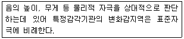
- 웨버(Weber)
- 호프만(Hofmann)
- 체핀(Chaffin)
- 핏츠(Fitts)
(정답률: 72%)
40. 다음 중 반복적 노출에 따라 민감성이 가장 쉽게 떨어지는 표시장치는?
- 시각 표시장치
- 청각 표시장치
- 촉각 표시장치
- 후각 표시장치
(정답률: 80%)
3과목: 기계위험방지기술
41. 롤러기에서 가드의 개구부와 위험점 간의 거리가 200mm 이면 개구부 간격은 몇 mm 이어야 하는가? (단, 위험점이 전동체이다.)
- 30mm
- 26mm
- 36mm
- 20mm
(정답률: 48%)
42. 컨베이어의 역전방지장치의 형식 중 전기식 장치에 해당하는 것은?
- 라쳇 브레이크
- 밴드 브레이크
- 롤러 브레이크
- 슬러스트 브레이크
(정답률: 63%)
43. 기계요소에 의해서 사람이 어떻게 상해를 입느냐에 대한 5가지 요소(사고 체인의 5요소)에 해당하지 않는 것은?
- 함정(trap)
- 충격(impact)
- 결함(flaw)
- 접촉(contact)
(정답률: 52%)
44. 휴대용 연삭기 덮개의 노출각도 기준은?
- 60˚ 이내
- 90˚ 이내
- 150˚ 이내
- 180˚ 이내
(정답률: 57%)
45. 기계설비의 근원적인 안전화 확보를 위한 고려사항 중에서 작업의 안전화에 해당된 것은?
- 기계 외형부분 및 돌출부분 덮개 설치
- 주변의 유해 가스나 분진에 대한 저항력을 갖추도록 기계 제작
- 작업자가 오인이 안되도록 기계류의 적절히 배치 및 표시
- 필요한 기계적 특성을 얻기 위하여 적절한 열처리를 수행함
(정답률: 45%)
46. 선반작업 중 안전사항과 거리가 먼 것은?
- 선반작업 시 바이트는 되도록 길게 설치한다.
- 칩을 짧게 끊어지도록 칩 브레이커를 설치한다.
- 기계 운전 중에는 백기어(back gear)의 사용을 금한다.
- 일감의 길이가 긴 공작물은 방진구를 설치하여 진동을 방지한다.
(정답률: 74%)
47. 양수 조작식 방호장치에서 양쪽 누름버튼 간의 내측 거리는 몇 mm 이상이어야 하는가?
- 100
- 200
- 300
- 400
(정답률: 81%)
48. 작업자의 신체움직임을 감지하여 프레스의 작동을 급정지시키는 광전자식 안전장치를 부착한 프레스가 있다. 안전거리가 32cm 라면 급정지에 소요되는 시간은 최대 몇 초 이내일 때 안전한가? (단, 급정지에 소요되는 시간은 손이 광선을 차단한 순간부터 급정지기구가 작동하여 슬라이드가 정지할 때 까지의 시간을 의미한다.)
- 0.1초
- 0.2초
- 0.5초
- 1초
(정답률: 57%)
49. 양중기에 사용하지 않아야 하는 달기체인의 기준으로 틀린 것은?
- 변형이 심한 것
- 균열이 있는 것
- 길이의 증가가 제조시보다 3%를 초과 한 것
- 링의 단면지름의 감소가 제조시 링 지름의 10%를 초과한 것
(정답률: 76%)
50. 보일러수 중에 유지류, 용해 고형물, 부유물 등에 의해 보일러 수면에 거품이 발생하여 수위가 불안정하게 되고 심하면 보일러 밖으로 흘러넘치게 되는 현상은?
- 플라이밍
- 포밍
- 캐리오버
- 워터해머
(정답률: 80%)
51. 원심기의 안전대책에 관한 사항에 해당되지 않는 것은?
- 내용물이 튀어나오는 것을 방지하도록 덮개를 설치 하여야 한다.
- 최고사용회전수를 초과하여 사용해서는 아니된다.
- 청소, 검사, 수리 등의 작업시에는 그 기계의 운전을 정지하여야 한다.
- 폭발을 방지하도록 압력방출장치를 2개 이상 설치 하여야 한다.
(정답률: 81%)
52. 위험한 작업점과 작업자 사이에 위험을 차단시키는 격리형 방호장치가 아닌 것은?
- 덮개형 방호장치
- 완전차단형 방호장치
- 안전방책
- 접촉반응형 방호장치
(정답률: 62%)
53. 아세틸렌 용접장치에 대하여 취관마다 설치하여야 하는 것은? (단, 주관 및 취관에 근접한 분기관마다 이것을 부착한 때는 부착하지 않아도 된다.)
- 압력조정기
- 안전기
- 토치크리너
- 자동전격 방지기
(정답률: 78%)
54. 드릴링 머신의 드릴지름이 10mm 이고, 드릴 회전수가 1000rpm 일 때 원주 속도는 약 몇 m/min 인가?
- 3.14 m/min
- 6.28 m/min
- 31.4 m/min
- 62.8 m/min
(정답률: 77%)
55. 같은 주행로에 병렬로 설치되어 있는 주행 크레인에서 크레인끼리 충돌이나, 근로자에 접촉하는 것을 방지하는 방호장치는?
- 안전 매트
- 급정지장치
- 방호 울
- 스토퍼
(정답률: 50%)
56. 와이어로프에서 소선 하나의 파단강도는 P, 와이어로프 가닥수는 N, 안전계수는 S일 때, 이 와이어로프의 최대안전하중 Q는?
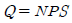
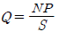
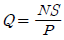
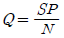
(정답률: 63%)
57. 체인과 스프로킷, 랙과 피니언, 풀리와 V벨트 등에서 형성되는 위험점은?
- 끼임점
- 회전말림점
- 접선물림점
- 협착점
(정답률: 52%)
58. 드릴 작업 시 올바른 작업안전수칙으로 거리가 먼 것은?
- 구멍을 뚫을 때 관통된 것을 확인하기 위해 손으로 만져서는 안 된다.
- 드릴을 끼운 후에 척 렌치(chuck wrench)를 끼우고 작업 한다.
- 작업모를 착용하고 옷소매가 긴 작업복은 입지 않는다.
- 보호 안경을 쓰거나 안전덮개(shield)를 설치한다.
(정답률: 82%)
59. 산업용 가스용기(Bombe)와 그 도색의 연결이 잘못된 것은?
- 산소 - 청색
- 아세틸렌 - 황색
- 액화석유가스 - 회색
- 수소 - 주황색
(정답률: 60%)
60. 롤러기의 급정지장치의 조작부의 방식이 아닌 것은?
- 복부로 조작 하는 것
- 발로 조작 하는 것
- 손으로 조작 하는 것
- 무릎으로 조작 하는 것
(정답률: 75%)
4과목: 전기 및 화학설비위험방지기술
61. 저항 값이 0.2Ω 인 도체에 10A의 전류가 1분간 흘렀을 경우 발생하는 열량은 몇 cal 인가?
- 64
- 144
- 288
- 386
(정답률: 55%)
62. 정전작업 중 작업시작 전에 필요한 조치와 가장 거리가 먼 것은?
- 작업내용을 잘 주지시킨다.
- 단락접지구와 시건 표지를 철거한다.
- 검전기 등에 의한 정전상태를 확인한다.
- 개로 개폐기에 잠금장치를 하고 잔류전하를 방전 시킨다.
(정답률: 63%)
63. 아세틸렌 40vol%, 메탄 40vol%, 에탄 20vol%인 혼합가스의 공기 중 폭발하한계는 약 얼마인가? (단, 아세틸렌, 메탄, 에탄의 폭발하한계는 각각 2.5vol%, 5vol%, 3vol%이다.)
- 3.26vol%
- 2.95vol%
- 4.15vol%
- 3.55vol%
(정답률: 53%)
64. 산업안전보건법상의 위험물을 저장·취급하는 화학설비 및 그 부속설비를 설치하는 경우 폭발이나 화재에 따른 피해를 줄이기 위하여 단위공정시설 및 설비로부터 다른 단위공정시설 및 설비의 사이의 안전거리는 얼마로 하여야 하는가?
- 설비의 안쪽 면으로부터 10미터 이상
- 설비의 바깥 면으로부터 10미터 이상
- 설비의 안쪽 면으로부터 5미터 이상
- 설비의 바깥 면으로부터 5미터 이상
(정답률: 70%)
65. 다음 중 인체의 대부분이 수중에 있는 상태에서의 허용접촉전압으로 옳은 것은?
- 2.5V 이하
- 25V 이하
- 50V 이하
- 75V 이하
(정답률: 74%)
66. 산업안전보건법에 따라 사업주는 누전에 의한 감전의 위험을 방지하기 위하여 접지를 하여야 하는데 다음 중 접지하지 아니할 수 있는 부분은?
- 관련 법에 따른 이중절연구조로 보호되는 전기 기계·기구
- 전기 기계·기구의 금속제 외함, 금속제 외피 및 철대
- 전기를 사용하지 아니하는 설비 중 전동식 양중기의 프레임과 궤도에 해당하는 금속체
- 코드와 플러그를 접속하여 사용하는 고정형·이동형 또는 휴대형 전동기계· 기구의 노출된 비충전 금속체
(정답률: 67%)
67. 다음 중 물질의 저장방법으로 옳은 것은?
- 황린 : 저장용기 중에 물을 넣어 보관
- 과산화수소 : 장기 보존시에는 유리 용기에 저장
- 피크린산 : 철 또는 구리로 된 용기에 저장
- 마그네슘 : 다습하고, 통풍이 잘 되는 장소에 보관
(정답률: 78%)
68. 최소 착화에너지가 0.25mJ, 극간 정전 용량이 10pF 인 부탄가스 버너를 점화시키기 위해서는 최소 얼마 이상의 전압을 인가해야 하는가?
- 0.52 × 102 V
- 0.74 × 103 V
- 7.07 × 103 V
- 5.03 × 105 V
(정답률: 61%)
69. 다음 중 정전기의 대전현상이 아닌 것은?
- 교반대전
- 충돌대전
- 파괴대전
- 망상대전
(정답률: 75%)
70. 다음 설명에 해당하는 위험장소의 종류로 옳은 것은?
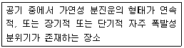
- 0종 장소
- 1종 장소
- 20종 장소
- 21종 장소
(정답률: 63%)
71. 다음 중 산업안전보건법에 따른 방폭구조의 종류에 있어 방진방폭구조를 나타내는 표시로 옳은 것은?
- tD
- DDP
- XDP
- DP
(정답률: 65%)
72. 다음 중 " 공기 중의 발화온도"가 가장 높은 물질은?
- CH4
- C2H2
- H2S
- C2H6
(정답률: 58%)
73. 다음 중 정전기 재해의 방지대책으로 사용하는 제전기의 종류와 특성을 잘못 나타낸 것은?(오류 신고가 접수된 문제입니다. 반드시 정답과 해설을 확인하시기 바랍니다.)
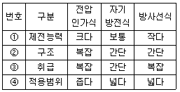
- ①
- ②
- ③
- ④
(정답률: 47%)
74. 다음 중 소화의 원리에 해당되지 않는 것은?
- 연소의 연쇄반응을 차단시킨다.
- 한계산소지수를 높이도록 한다.
- 가연성 물질을 인화점 또는 발화점 이하로 낮춘다.
- 혼합 기체의 농도를 연소 범위 밖으로 벗어나게 한다.
(정답률: 65%)
75. 다음 중 인체에 흐르는 전류가 50mA일 때 일반적으로 인체에 미치는 영향을 가장 적절하게 설명한 것은?
- 거의 느끼지 못한다.
- 가벼운 경직 현상이 일어난다.
- 혈압상승, 심장박동이 불규칙하여 실신하기도 한다.
- 심한 근육 수축으로 현장에서 사망한다.
(정답률: 57%)
76. 다음 중 건조설비의 사용상 주의사항으로 적절하지 않은 것은?
- 건조설비 가까이 가연성 물질을 두지 말 것
- 고온으로 가열 건조한 물질은 즉시 격리 저장할 것
- 위험물 건조설비를 사용할 때는 미리 내부를 청소하거나 환기시킨 후 사용할 것
- 건조시 발생하는 가스·증기 또는 분진에 의한 화재·폭발의 위험이 있는 물질은 안전한 장소로 배출할 것
(정답률: 75%)
77. 공정안전보고서에 포함되어야 할 세부 내용 중 공정안전 자료에 해당하는 것은?
- 각종 건물·설비의 배치도
- 결함수분석(FTA)
- 도급업체 안전관리계획
- 비상조치계획에 따른 교육계획
(정답률: 63%)
78. 다음 중 물질의 위험성과 그 시험방법이 올바르게 연결된 것은?
- 인화점 - 태그 밀폐식
- 발화온도 - 산소지수법
- 연소시험 - 도입법
- 최소발화에너지 - 크리브란드 개방식
(정답률: 60%)
79. 산업안전보건법에 따라 누전에 의한 감전위험을 방지하기 위하여 대지전압이 몇 V를 초과하는 이동형 또는 휴대형 전기기계·기구에는 감전방지용 누전차단기를 설치하여야 하는가?
- 50V
- 75V
- 110V
- 150V
(정답률: 61%)
80. 어떤 인화성 액체가 점화원의 존재 하에 지속적인 연소를 일으키는 최저 온도를 무엇이라고 하는가?
- 인화점
- 발화점
- 연소점
- 산화점
(정답률: 46%)
5과목: 건설안전기술
81. 사업주는 비계의 높이가 2m 이상인 작업장소에는 작업발판을 설치하여야 하는데 그 설치기준으로 옳지 않은 것은?
- 발판재료는 작업할 때의 하중을 견딜 수 있도록 견고한 것으로 할 것
- 작업발판의 폭은 40cm 이상으로 하고, 발판재료 간의 틈은 3cm 이하로 할 것
- 작업발판재료는 뒤집히거나 떨어지지 않도록 하나 이상의 지지물에 연결하거나 고정시킬 것
- 추락의 위험이 있는 장소에는 안전난간을 설치할 것
(정답률: 45%)
82. 재해사고를 방지하가 위하여 크레인에 설치된 방호장치가 아닌 것은?
- 과부하방지장치
- 권과방지장치
- 브레이크
- 와이어로프
(정답률: 58%)
83. 다음 중 건설용 양중기에 대한 설명으로 옳은 것은?
- 삼각데릭은 인접시설에 장해가 없는 상태에서 360˚ 회전이 가능하다.
- 이동식크레인(crane)에는 트럭 크레인, 크롤러 크레인 등이 있다.
- 휠 크레인에는 무한궤도식과 타이어식이 있으며 장거리 이동에 적당하다.
- 크롤러 크레인은 휠 크레인보다 기동성이 뛰어나다.
(정답률: 67%)
84. 터널 지보공을 조립하는 경우에는 미리 그 구조를 검토한 후 조립도를 작성하고, 그 조립도에 따라 조립 하도록 하여야 하는데 조립도에 명시해야 할 사항과 가장 거리가 먼 것은?
- 재료의 강도
- 단면규격
- 이음방법
- 설치간격
(정답률: 59%)
85. 다음 ( )안에 들어갈 말로 옳은 것은?
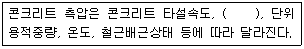
- 타설높이
- 타설순서
- 콘크리트 강도
- 박리제
(정답률: 72%)
86. 다음 ( )안에 알맞은 숫자는?
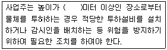
- 2
- 3
- 5
- 10
(정답률: 55%)
87. 작업장 계단 및 계단참의 설치기준으로 옳지 않은 것은?
- 계단 및 계단참을 설치할 때 안전율은 4이상으로 할 것
- 계단을 설치하는 경우 그 폭을 1m 이상으로 할 것
- 높이가 3m 를 초과하는 계단에 높이 3m 이내마다 너비 1.5m 이상의 계단참을 설치할 것
- 높이 1m 이상인 계단의 개방된 측면에는 안전난간을 설치할 것
(정답률: 46%)
88. 추락시 로프의 지지점에서 최하단까지의 거리(h)를 구하는 식으로 옳은 것은?
- h = 로프의 길이 + 신장
- h = 로프의 길이 + 신장/2
- h = 로프의 길이 + 로프의 늘어난 길이 + 신장
- h = 로프의 길이 + 로프의 늘어난 길이 + 신장/2
(정답률: 73%)
89. 블레이드의 길이가 길고 낮으며 블레이드의 좌우를 전후로 25~30˚ 각도로 회전시킬 수 있어 흙을 측면으로 보낼 수 있는 도저를 무슨 도저라 하는가?
- 레이크 도저
- 스트레이트 도저
- 앵글도저
- 틸트도저
(정답률: 70%)
90. 안전난간의 설치기준으로 옳지 않은 것은?
- 상부난간대는 바닥면·발판 또는 경사로의 표면으로 부터 90cm 이상 지점에 설치한다.
- 발끝막이판은 바닥면등으로부터 20cm 이상의 높이를 유지할 것
- 상부난간대와 중간난간대는 난간 길이 전체에 걸쳐 바닥면 등과 평행을 유지할 것
- 난간대는 지름 2.7cm 이상의 금속제 파이프나 그 이상의 강도가 있는 재료일 것
(정답률: 68%)
91. 이동식비계 작업 시 주의 사항으로 옳지 않은 것은?
- 작업감독자의 지휘하에 작업을 행해야 한다.
- 근로자가 탑승하여 이동하여야 한다.
- 비계를 이동시키고자 할 때는 바닥의 구멍이나 머리 위의 장애물을 사전에 점검한다.
- 비계를 이동할 때에는 충분한 인원을 배치하여야 한다.
(정답률: 77%)
92. 사다리식 통로의 설치기준으로 옳지 않은 것은?
- 발판의 벽과의 사이는 15cm 이상의 간격을 유지 할 것
- 사다리의 상단은 걸쳐놓은 지점으로부터 40cm 이상 올라가도록 할 것
- 폭은 30cm 이상으로 할 것
- 사다리식 통로의 기울기는 75˚ 이하로 할 것
(정답률: 62%)
93. 암반 굴착공사에서 굴착높이가 5m, 굴착기초면의 폭이 5m인 경우 양단면 굴착을 할 때 상부단면의 폭은? (단, 굴착기울기는 1:0.5로 한다.)
- 5m
- 10m
- 15m
- 20m
(정답률: 53%)
94. 채석작업을 하는 경우 지반의 붕괴 또는 토석의 낙하로 인하여 근로자에게 발생할 우려가 있는 위험을 방지하기 위하여 취하여야 할 조치와 가장 거리가 먼 것은?
- 작업 시작 전 작업장소 및 그 주변 지반의 부석과 균열의 유무와 상태
- 함수·용수 및 동결상태의 변화 점검
- 진동치속도 점검
- 발파 후 발파장소 점검
(정답률: 50%)
95. 다음 중 흙의 투수계수에 영향을 미치는 요소가 아닌 것은?
- 입자의 모양과 크기
- 유체의 점성계수
- 공극비
- 압축지수
(정답률: 31%)
96. 추락방지망의 방망 지지점은 최소 얼마 이상의 외력에 견딜 수 있는 강도를 보유하여야 하는가?
- 500kg
- 600kg
- 700kg
- 800kg
(정답률: 61%)
97. 유해·위험 방지계획서 작성 대상 공사의 기준으로 옳지 않은 것은?
- 지상높이 31m 이상인 건축물 공사
- 저수용량 1천만톤 이상인 용수 전용 댐
- 최대지간길이 50m 이상인 교량건설공사
- 깊이 10m 이상인 굴착공사
(정답률: 72%)
98. 슬레이트, 선라이트 등 강도가 약한 재료로 덮은 지붕 위에서의 작업 중 위험방지를 위하여 필요한 발판의 폭 기준은?
- 10cm 이상
- 20cm 이상
- 25cm 이상
- 30cm 이상
(정답률: 74%)
99. 철근 콘크리트 공사에서 거푸집동바리의 해체 시기를 결정하는 요인으로 가장 거리가 먼 것은?
- 시방서 상의 거푸집 존치기간의 경과
- 콘크리트 강도시험 결과
- 일정한 양생 기간의 경과
- 후속공정의 착수시기
(정답률: 61%)
100. 지반보다 6m 정도 깊은 경질 지반의 기초터파기에 적합한 굴착 기계는?
- Drag Line
- Tractor Shovel
- BackHoe
- Power Shovel
(정답률: 54%)